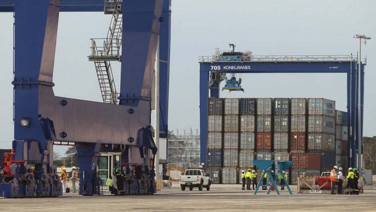

Movilidad y flujos migratorios La migración dentro de la zona se debe principalmente a la actividad agrícola (caña de azúcar) por temporada, ya que la época de zafra da inicio en el mes de noviembre y finaliza en el mes de abril-mayo (corte y procesamiento de caña), existe este fenómeno principalmente en los grupos o sectores sociales extremadamente pobres y pobres, incluyendo población proveniente de otras zonas del altiplano occidental y la región de Las Verapaces. Además, un porcentaje mínimo de la población del municipio de Escuintla han tenido que emigrar a otros países como Estados Unidos de Norte América, España, Canadá y México. El ingreso de las remesas provenientes de otros lugares es variado, sin embargo esto ha contribuido con el ingreso de muchas familias del municipio en general y al impulso de la economía local en pequeña escala.
El cultivo predominante de esta región y para el municipio es caña de azúcar, la producción de café y granos básicos. La sostenibilidad del municipio recae en la agroindustria azucarera, ya que ésta genera la mayoría de trabajos para la población. Es relevante mencionar, que existen agricultores productores de otro tipo de frutales como mango, banano, plátano, hortalizas, maíz y frijol, que según el MAGA, los clasifica como productores de infra-subsistencia, subsistencia, excedentarios y comerciales, los cuales también basan gran parte de su economía en el empleo de la mano de obra para la producción de sus cultivos para autoconsumo. En cuanto a la producción artesanal, por ser municipio que se dedica a la agricultura e industria, no ha desarrollado ningún tipo de artesanías populares.
Las organizaciones empresariales más fuertes presentes en el municipio son: Ingenio San Diego, Pantaleón Concepción y Santa Ana. Se constituyen en exportadores de productos y subproductos de la caña de azúcar, dichas empresas están vinculadas a la Asociación de Azucareros de Guatemala (ASAZGUA). En cuanto al cultivo y comercialización del café, la compraventa se realiza en las comunidades productoras por los intermediarios, quienes trasladan el producto hacia las casas comerciales.
